Творческое объединение
"Открытый университет"
Мероприятия
АКВАРЕЛЬ МОЕЙ ЛЮБВИ:
АЛГОРИТМЫ, ТЕХНИКИ И ПРИЕМЫ ПСИХОЛОГИЧЕСКОГО КОНСУЛЬТИРОВАНИЯ, КОРРЕКЦИИ И ТЕРАПИИ ОТНОШЕНИЙ
ПРИВЯЗАННОСТИ И ИНТИМНОСТИ
АССОЦИАТИВНЫЕ КАРТЫ В КОНСУЛЬТИРОВАНИИ, КОРРЕКЦИИ И ТЕРАПИИ ОТНОШЕНИЙ ПРИВЯЗАННОСТИ И ИНТИМНОСТИ: АЛГОРИТМЫ, ТЕХНИКИ И ПРИЕМЫ
АВТОР-РАЗРАБОТЧИК ПРОГРАММЫ ТРЕНИНГА И ВЕДУЩАЯ:
ВЕНСКО Ольга Иосифовна, магистр психологических наук, ученый-исследователь в области инженерной психологии, психологии труда и эргономики, старший преподаватель кафедры возрастной и педагогической психологии Гродненского государственного университета имени Янки Купалы, модератор психологических событий в Гродно и регионе, председатель экспертной комиссии сертифицированных программ Гродненского областного общественного объединения практических психологов (ГОООПП), Действительный член Общероссийской профессиональной психотерапевтической лиги (Москва), региональный менеджер программ и тренер Тренингового центра «Сталкер» (Витебск), возрастной психолог, профориентолог, эргонолог, организационный психолог Гродненского филиала РУП «Белпочта»; системный семейный психотерапевт, системный расстановщик, консультант по вопросам сексуальности и женской самоидентичности, кризисный психолог, травмотерапевт, арт-терапевт, мастер метафорической психотерапии.
Контактные линии:
Контактный телефон: +375 29 2857057
E-mail: PlanetaSchastia@mail.ru
E-mail: Venska-life@mail.ru
www.psycholog.p.ht/index.php
SKYPE: VENSKA-PSY
SKYPE: Olga_Venska
Офис 1: 230025, г. Гродно, ул. К. Маркса, 29-412
Офис-2: 230025, г. Гродно, ул. Б. Троицкая, 46 (1 этаж)
АННОТАЦИЯ ТРЕНИНГА
У каждой Истории Любви несколько авторов: Он, Она, Бог и Обстоятельства Жизни….
Но Полотно Любви всегда одно. Каждый Творец, непревзойденный Художник этой неповторимой Картины сам (осознанно либо нет) выбирает средства и технику создания Шедевра Чувственности.
И процесс, и результат этого творчества определен самобытностью каждого из Авторов Полотна Любви: какими маслами и красками авторы его распишут, таким оно и будет…
Как создать отношения нежно пастельных оттенков, как преобразовать трогательную чувственность в огненную страстность двух пламенных темпераментов, как вовремя заметить угасание чувственности, как избежать жестоких штрихов, искажающих близость в паре на Вашем Полотне Любви – все это в авторской программе Ольги Венско «Акварель моей Любви».
Автор и ведущая тренинга - системный семейный психотерапевт, системный расстановщик, консультант по вопросам сексуальности и женской самоидентичности, консультант восстановительного подхода в работе с парами, мастер метафорической психотерапии.
Общая продолжительность тренинга: 6 часов.
Направление работы в тренинге, методы и технические приемы в программе: системная семейная психотерапия, метафорическая психотерапия и арт-терапия, символдрама, мандала, ассоциативные карты.
Основные вопросы, раскрывающиеся в программе тренинга: типы психологической привязанности; понятие интимности, сексуальности и психосексуального развития; трехкомпонентная модель изучения чувства любви; функциональная и онтогенетическая модели развития любви; искажения и нарушения чувства любви; ревность как нарушение комфорта пары и проявление деструктивности интимных отношений; техники коррекции и терапии отношений привязанности и интимности.
ДИЗАЙН ПРОГРАММЫ ТРЕНИНГА
10.00 – 11.00
Приветствие участников тренинга. Введение в тему тренинга.
Привязанность, интимность, любовь: определение понятий; типы психологической привязанности; страх потери объекта привязанности.
11.00 -13.00
Понятие интимности. Любовь как вершина человеческой интимности.
Трехкомпонентная модель и возможности изучения чувства любви.
Развитие любви как чувства. Функциональная модель развития любви. Онтогенетическая модель развития любви.
Искажения и нарушения чувства любви. Невротические стратегии отношения к миру. Понятие о невротической любви. Виды отклонений в любви.
Ревность как проявление деструктивности интимных отношений. Определения и характеристики ревности. Ревность и зависть – сходства и различия. Реакции и виды ревности. Специфика ревности мужчин и женщин.
14.00 -17.30
Психокоррекция ревности и страха утраты привязанности. Техники и алгоритмы работы с ассоциативными картами.
Краткий обзор используемых наборов ассоциативных карт. Рекомендации по работе с ассоциативными картами. Техники применения ассоциативных карт в психокоррекции отношений привязанности и интимности. Экспресс-анализ отношений. Мандала. Схема взаимодействия. Алгоритм выбора способа разрешения конфликта.
17.30-18.00
Завершение программы:
Рефлексия участников тренинга.
Групповой шеллинг. Обратная связь участников и тренера по работе в программе.
Закрытие группы.
Для работы с отношениями:
Мы в отношениях
Трансформация реальности
Работа с Тенью
Лицом к лицу
Беру и отдаю
Треугольник любви (на основе модели Р. Стернберга)
Треугольник сострадания
Ожидания и ресурсы
Смыслы конфликтных отношений
Управление конфликтом в отношениях
Дом, похожий на меня
Дом наших отношений
Город наших отношений
Алгоритмы психокоррекционной работы с использованием ассоциативных карт
Алгоритм «Я-реформирования» (психокоррекция «Я-образа»)
Алгоритм работы с балансом «привязанность – сепарация»
Алгоритм реформирования интроекта
ЖИЗНЬ ПОСЛЕ ИЗМЕНЫ:
КАК ВОССТАНОВИТЬ ДОВЕРИЕ И ВДОХНОВИТЬ НА ЧЕСТНОСТЬ
Статистика - это наука, и она неумолима. После неверности одного из
супругов:
- 19% пар разводятся сразу
- 75% пар разводятся в течение 18-24 месяцев
Почему такие страшные цифры?!
Большинство супругов продолжали любить друг друга, но было нечто, что привело к печальному концу их брак.
Основные причины заключаются в том, что:
- обманутый супруг не может простить и избавиться от страха, что это может повторится
снова
- сбившийся с пути супруг не может продемонстрировать свою надежность.
В результате доверие не восстанавливается, а без него все равно, что жизнь без воздуха.
А сколько прошло времени в вашем случае? Какие шансы вы даете своему браку?
Если ваши отношения восстанавливаются очень тяжело, с периодическим состоянием «опускания рук», то знайте, это не ваша вина. Просто вас никто не научил, как это делать правильно и более эффективно.
Успех выживших пар после измены – результат не случайности, а регулярно применяемых стратегий и действий, которые помогали преодолеть сомнения, нечестность, недоверие и другие отголоски необдуманных поступков одного из супругов.
АВТОР-РАЗРАБОТЧИК ПРОГРАММЫ ТРЕНИНГА И ВЕДУЩАЯ:
ВЕНСКО Ольга Иосифовна, магистр психологических наук, ученый-исследователь в области инженерной психологии, психологии труда и эргономики, старший преподаватель кафедры возрастной и педагогической психологии Гродненского государственного университета имени Янки Купалы, модератор психологических событий в Гродно и регионе, председатель экспертной комиссии сертифицированных программ Гродненского областного общественного объединения практических психологов (ГОООПП), Действительный член Общероссийской профессиональной психотерапевтической лиги (Москва), региональный менеджер программ и тренер Тренингового центра «Сталкер» (Витебск), возрастной психолог, профориентолог, эргонолог, организационный психолог Гродненского филиала РУП «Белпочта»; системный семейный психотерапевт, системный расстановщик, консультант по вопросам сексуальности и женской самоидентичности, кризисный психолог, травмотерапевт, арт-терапевт, мастер метафорической психотерапии.
Контактные линии:
Контактный телефон: +375 29 2857057
E-mail: PlanetaSchastia@mail.ru
E-mail: Venska-life@mail.ru
www.psycholog.p.ht/index.php
SKYPE: VENSKA-PSY
SKYPE: Olga_Venska
Офис 1: 230025, г. Гродно, ул. К. Маркса, 29-412
Офис-2: 230025, г. Гродно, ул. Б. Троицкая, 46 (1 этаж)
ПРОГРАММА ТРЕНИНГА:
12 эффективных действий для укрепления доверия (чем больше делаете, тем больше пунктов доверия восстанавливаете)
Как избавиться от ложного мышления и прекратить путать обман с правдой
Как развить большую честность в себе и вдохновить на честность партнера
Как устранить 5 самых главных препятствий, которые блокируют процесс восстановление доверия
Как превратить обещание в доверие-восстановительное действие
Как найти самого главного монстра и нейтрализовать его навсегда
Самый эффективный и самый быстрый способ для восстановления доверия «3 уровня прозрачности»
Личные примеры и опыт клиентов
ИНДИКАТОРЫ ВОССТАНОВИТЕЛЬНОЙ ТЕХНОЛОГИИ
Уверенность в себе, в своем партнере, в ваших отношениях.
Знать конкретные инструменты и методы, необходимые для создания отношений, в которых будут отсутствовать такие вещи, как обман, подозрения и скрытность.
Обладание такими стратегиями, которые день за днем позволят доверию между вами расти и увеличиваться.
Смелость и мужество принимать риски, которые минимизируются в ходе восстановления доверия.
Свободное, открытое и честное общение с партнером.
Ощущение контроля над собственной судьбой, а не зависимость от навязчивых мыслей о прошлом.
Умение всегда быть свободным от страха будущего.
Готовность отпустить навсегда все, что блокирует и ограничивает доверие – и наслаждаться честными, открытыми отношениями, которые придают вашей семье силы и двигают вас вперед.
Способность просыпаться каждый день уравновешенным, позитивно настроенным, в приподнятом настроении – в ожидании, что наступающий день принесет успех.
Для многих пар этот тренинг стал настоящей находкой!
И возможно в эту минуту они делают то, что позволяет доверию расти и крепнуть, а
любовь между ними расцветает,
как сад после суровой зимы.
И у вас есть такая возможность. Приходите.
Будем работать над отношениями вместе.
Уникальность этого тренинга состоит в том, что вы получите 12 проверенных временем
конкретных действий, которые позволят:
- обманутому партнеру набраться смелости и рискнуть довериться снова
- а для второго партнера, эти действия позволят продемонстрировать свою надежность.
Автор-разработчик и ведущая тренинга: Ольга Венско, семейный психолог, консультант по вопросам преодоления неверности, сертифицированный системный семейный психотерапевт, сексолог.

СТРУКТУРА ТРЕНИНГА:
10.00 – 11.00
Введение в тренинг. Вводная часть. Феномен «измена» как индикатор состояния текущих отношений.
11.00. – 13.00
Работа с системой отношений: любовь – близость –угасание чувственности - холодность - уход из отношений – измена – вина и стыд – отчаяние, раскаяние, расплата – восстановительная технология.
Работа с обидой.
Работа с принятием.
14.00 – 17.30
Технологии восстановительного подхода в работе с парой:
- Как создать отношения, где любовь, доверие и
сексуальное
счастье никогда не прекращают расти и увеличиваться
- Как спроектировать ваши отношения так, чтобы они
соответствовали вашим желаниям и настолько полно, что ни один из вас не
ощутит
потребности выйти за пределы вашей семьи
- Как бороться со скукой и другими негативными эмоциями
- 4 составляющих Страстной моногамии (любовь, доверие,
открытое
общение и сексуальное счастье)
- 6 групп ритуалов, которые помогут избежать
посредственности и
не допустить снижения страсти
- 21 ключевой принцип страстного подхода
- 12 свобод в границах страстной моногамии и многое
другое...
17.30 – 18.00
Завершение работы группы.
Рефлексия участников.
Групповой шеллинг. Обратная связь участников и тренера по эффективности программы.
Закрытие группы.
МАТЬ И ДИТЯ
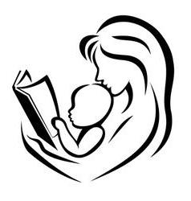
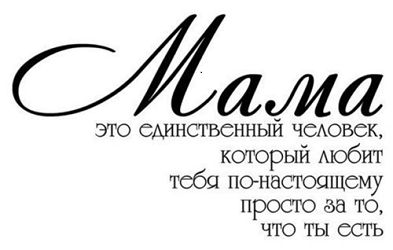
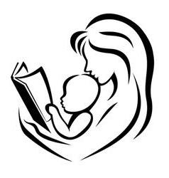
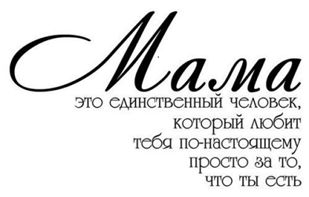
АВТОР-РАЗРАБОТЧИК ПРОГРАММЫ ТРЕНИНГА И ВЕДУЩАЯ:
ВЕНСКО Ольга Иосифовна, магистр психологических наук, ученый-исследователь в области инженерной психологии, психологии труда и эргономики, старший преподаватель кафедры возрастной и педагогической психологии Гродненского государственного университета имени Янки Купалы, модератор психологических событий в Гродно и регионе, председатель экспертной комиссии сертифицированных программ Гродненского областного общественного объединения практических психологов (ГОООПП), Действительный член Общероссийской профессиональной психотерапевтической лиги (Москва), региональный менеджер программ и тренер Тренингового центра «Сталкер» (Витебск), возрастной психолог, профориентолог, эргонолог, организационный психолог Гродненского филиала РУП «Белпочта»; системный семейный психотерапевт, системный расстановщик, консультант по вопросам сексуальности и женской самоидентичности, кризисный психолог, травмотерапевт, арт-терапевт, мастер метафорической психотерапии.
Контактные линии:
Контактный телефон: +375 29 2857057
E-mail: PlanetaSchastia@mail.ru
E-mail: Venska-life@mail.ru
www.psycholog.p.ht/index.php
SKYPE: VENSKA-PSY
SKYPE: Olga_Venska
Офис 1: 230025, г. Гродно, ул. К. Маркса, 29-412
Офис-2: 230025, г. Гродно, ул. Б. Троицкая, 46 (1 этаж)
АННОТАЦИЯ ТРЕНИНГА
Название тренинга: «Материнский Ковчег: от девиантного материнства - к эффективному родительству».
Ведущая тренинга: Ольга Венско, системный семейный психотерапевт, системный расстановщик, консультант по вопросам сексуальности и женской самоидентичности, кризисный психолог, травмотерапевт, арт-терапевт, мастер метафорической психотерапии, супервизор Творческого объединения мастеров метафорической психотерапии «Карточный Домик», руководитель студии развития «Палитра Жизни». Главное звание в моей жизни – Мама.
Направление работы, формы и методы работы в программе: психоаналитический подход в понимании родительства; феноменология девиантного и эффективного родительства в парадигме психодинамической и позитивной терапии; проективные методы исследования и коррекции самоидентичности образа родителя, арт-терапия, метафорическая психотерапия.
Общая продолжительность тренинга: 6 часов.
Целевая аудитория: все желающие получить эту информацию при условии возраста 22+.
Общая численность группы: 20 человек.
СТРУКТУРНАЯ ОРГАНИЗАЦИЯ ПРОГРАММЫ ТРЕНИНГА
10.00 – 12.00
ВВЕДЕНИЕ В ТЕМУ ТРЕНИНГА.
Проективная техника «Галерея материнских образов».
Основная часть. Родительство, как фаза развития.
Часть первая
- Мотивация перехода в родительство.
- Динамика развития Эго ребенка. Симбиоз. Сепарация. Взросление.
Развитие.
- Эмоциональный симбиоз. Интроекция, идентификация.
- Уверенность, функции уверенности. Чувство стыда.
- Фрустрирующий ребенок. Уверенность и амбивалентное ядро.
- Критические периоды развития ребенка.
- Влечение к отцовству. Мужская репродуктивная функция.
- Бисексуальность и ее разрешение у мужчины.
- Взаимодействие отца и ребенка.
Часть вторая
- Интернализация внешней реальности.
- Потеря симбиоза, расширение границ Эго.
- Взаимоотношения ребенка и родителей.
- Имитация.
- Всемогущество родителей и его роль в развитии ребенка.
- Эдипальная фаза.
- Формирование пограничной структуры личности. Нарциссизм.
- Типы коммуникаций в системе «мать и дитя» по С. Лебовиси.
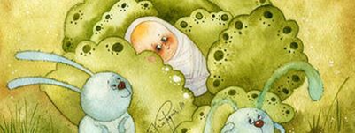
12.00-13.00
14.00 -15.00
Девиантное материнство.
- Параметры, важные для развития ребенка.
- Шесть стилей отношения родителей к детям.
- Концепция сцепленной психопатологии родителей и детей.
Нарциссическое расширение.
- Типы жесткого обращения к ребенку.
- Сценарии внутри семьи, приводящие к психопатологии личности.
- Детско-родительские отношения на стадии внутриутробного
развития.
- Факторы, затрудняющие процесс родительства.
- Бессознательные фантазии о ребенке.
- Влияние родительских фантазий в период ожидания ребенка.
Нарушения взаимоотношений матери и ребенка на стадии внутриутробного развития.
Дефицит пренатальной привязанности.
- Причины девиантного материнства.
- Оральная стадия развития ребенка. Нарциссический сценарий
родительства на оральной стадии развития ребенка, как ядро психопатологии ребенка.
- Типы матерей.
- Варианты неправильных отношений между матерью и ребенком по Р.
Шпицу.
- Факторы эмоциональной недостаточности матери.
15.00 – 17.00
Отношения матери и ребенка, концепция Биона.
- Нежелание матери вести себя активно по отношению к ребенку.
- Вчувствование, вдействование, контейнирование.
- Роль проективной идентификации в контейнировании.
- Критерии контейнирования.
- Холдинг.
- Трансгенерационный мандат ребенка по С. Либовиси.
- Имаго матери и имаго отца.
- Всемогущественная мать.
- Эдипальная ситуация.
- Образ себя. Чувство. Образ другого человека. Генез страхов.
- Фаза кризиса отношений (сепарации). Генез диффузного чувства
себя.
- Форклюзия отца и ее последствия.
- Речь ребенка.
- Инверсия детско-родительских отношений (ребенок-родитель),
последствия.
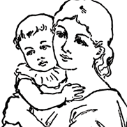
17.00 – 18.00
- Проективная рисуночная технология «Мать и дитя» в диагностике
привязанности.
- Рефлексия участников.
- Групповой шеллинг.
- Завершение программы.
Рисунок «Мать и дитя» в диагностике привязанности
Автор: Мельникова Мария Леонидовна
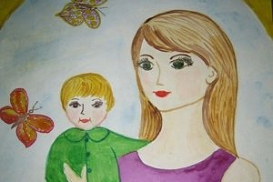
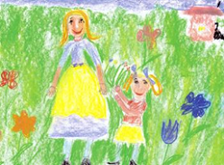
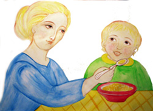

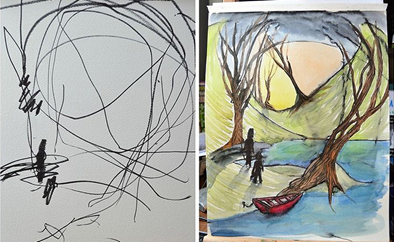
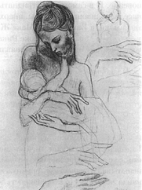